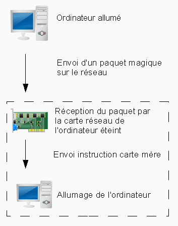
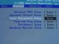
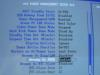
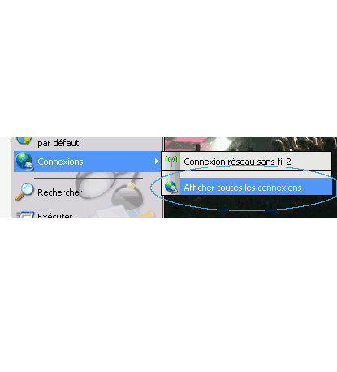
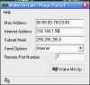

Bonjour : dans ce tutoriel, nous verrons comment utiliser une technique plutôt pratique et sympathique. Cette pratique s'appelle le wake on lan.
Le wake on lan, mais qu'est-ce que c'est ?
Le wake on lan, abrégé Wol, est une technique permettant de démarrer un ordinateur complètement éteint à partir du réseau. Cela peut se faire sur le réseau local (wake on lan) ou directement sur internet (Wake on wan). Sachez que pour que cela fonctionne, votre ordinateur à allumer doit être sous tension, connecté au réseau, configuré pour le wake on lan et bien sûr compatible. :D
Bon, on va directement commencer par la première partie qui traite de la théorie.
Dans cette partie, je parlerai de la théorie, ce n'est pas obligatoire mais je pense que les plus curieux seront intéressés par le fonctionnement du Wake on lan.
On va commencer par un petit schéma.

Commençons par le début, c'est mieux. :D Nous avons donc deux ordinateurs, un qui est allumé et l'autre qui est éteint et configuré pour le Wake on lan, on verra comment plus tard.
Un petit programme exécuté sur le premier ordinateur envoie un paquet de données, ce paquet contient les octets suivants : FF FF FF FF FF FF suivis de l'adresse MAC de la carte réseau de destination répétée seize fois. Ces données sont envoyées sur le port 7 ou sur n'importe quel port, j'expliquerai comment faire avec le port 7 dans ce tutoriel, mais sachez que la configuration est presque la même, cela n'a d'importance qu'au moment de configurer le programme de réveil. Quand la carte réseau de destination reçoit cette suite d'octets (aussi appelée trame), elle envoie un signal à la carte mère de l'ordinateur. La carte mère allume alors l'ordinateur.
Voilà, comme je le disais, ce n'est pas très simple mais j'espère que vous avez compris le principal qui est qu'une chaîne de données est envoyée à la carte réseau qui envoie un signal à la carte mère de l'ordinateur pour l'allumer.
Bon, on peut maintenant passer à la pratique. Je vous rassure, c'est normalement plus simple. ;)
La première configuration à faire et non des moindres est de configurer le BIOS. Le problème c'est qu'il y a différents BIOS, je vais donc expliquer avec des screenshots du mien. Les boutons sont à peu près les mêmes, je compte sur vous pour faire preuve d'autonomie. ;) Mon BIOS est un AMIBIOS, je vais donc expliquer avec celui-ci comme exemple. Sachez qu'il est possible que vous n'ayez pas la possibilité d'activer le Wake on Lan.
La première chose à faire est de rentrer dans le BIOS, il faut en général aller vite. Pour moi, je dois appuyer sur F2 lorsque le logo de mon ordinateur apparaît, juste avant le démarrage du système d'exploitation. Après avoir fait F2, on se retrouve dans le BIOS : à partir de maintenant, faites très attention, une petite erreur peut entraîner un sommeil éternel pour votre ordinateur. Mais bon, je vous fais confiance, vous ne ferez pas de bêtise. ;) Maintenant que vous êtes dans le BIOS, vous devez aller dans les options d'alimentation.  Chez moi, j'ai dû aller dans le menu avancé (Advanced en anglais) puis dans Power Management Setup (Configuration du gestionnaire d'alimentation).
Quand vous êtes dans le menu d'alimentation, il y a beaucoup d'options possibles, vous devez chercher quelque chose ressemblant à Wake on LAN, Wake on PCI ou même chez moi, Resume on PME. Vous devez mettre cette option en Enabled (Activé). Voici un petit screenshot du menu Power management Setup.
Quand vous avez fait ceci, vous devez quitter le BIOS en sauvegardant ; chez moi, quitter c'est Echap pour retourner au menu avancé puis F10. Normalement, il demande de confirmer et puis c'est bon, il a sauvé et il redémarre l'ordinateur. Maintenant que le BIOS est configuré, on va configurer le système d'exploitation. C'est plus simple parce que je vais mettre des images. ;)
Dans cette partie, nous parlerons de la configuration du système d'exploitation, j'expliquerai comment faire sous Windows XP, sous Ubuntu et Linux en général. On va commencer avec Windows XP.
Windows XP
Pour activer le Wake on Lan, il faut aller dans Démarrer > Connexions > Afficher toutes les connexions > La connexion que vous voulez configurer > Propriétés (clic droit) > Configurer > Avancé > Wake Up Capabilities > sélectionnez Magic frame dans la liste en dessous. Et n'oubliez surtout pas de valider. ;)

Voilà, alors, maintenant votre ordinateur est configuré pour le Wake on Lan. La dernière chose à faire est de récupérer l'adresse MAC de votre carte réseau. Pour ce faire, vous devez ouvrir la console Windows : démarrer > Exécuter > tapez cmd puis cliquez sur Ok et la console démarre. Pour avoir accès à votre adresse MAC, vous devez taper ceci dans la console :
ipconfig /all
Une liste apparaît, l'adresse MAC se trouve en face de Adresse physique. Vous pouvez l'écrire sur un papier ou la retenir mais sachez que vous en aurez besoin par la suite. ;)
Vous pouvez passer directement à la partie suivante si vous n'avez pas besoin de configurer Linux. Sachez qu'il ne faut configurer que l'ordinateur distant.
Avec Linux (L'exemple de Ubuntu)
Maintenant, la configuration sous Linux : j'ai pris l'exemple d'Ubuntu car je ne dispose actuellement que de cette distribution en état de marche mais sachez que c'est la même chose sur la plupart des distributions Linux, en tout cas, pour celles que je connais. Tout se fait en console pour Linux : les plus habitués le savent déjà, les configurations de Linux, c'est la plupart du temps en console que ça se passe. Alors, on va y aller, pourquoi attendre plus longtemps ? On va déjà vérifier que la carte réseau est configurée pour le Wake on Lan, pour cela, tapez ceci dans la console :
ethtool eth0
Cette commande renvoie toutes les configurations de la carte réseau eth0, si vous voulez les configurations d'autres cartes, changez le numéro en eth1, eth2, ...
Dans la liste d'informations donnée, vous devez chercher Wake-on: d ou Wake-on: g. Si c'est Wake-on: d, cela veut dire que votre carte n'est pas configurée pour le Wake on Lan, nous allons donc la configurer ; si par contre vous avez Wake-on: g, vous pouvez passer à la partie suivante. Pour activer le Wake on Lan, vous devez exécuter cette commande :
ethtool -s eth0 wol g
Le Wake on lan sera activé mais le problème c'est que Linux désactive le Wake on lan par défaut à chaque arrêt de l'ordinateur. Nous allons donc dire à Linux d'activer le Wake on lan à l'extinction de la machine, pour cela, vous devez modifier le fichier : /etc/rc.local. Vous devez ajouter la ligne ethtool -s eth0 wol g avant exit 0 Quand c'est fait, vous pouvez quitter votre éditeur de texte, en enregistrant bien sûr. ;) Voilà, la configuration est terminée, votre ordinateur est maintenant prêt au Wake on lan.
Il ne reste qu'une chose à faire, trouver l'adresse MAC de votre carte réseau ; l'adresse MAC, c'est une adresse unique attribuée à la carte réseau, elle est écrite dans une des puces de la carte réseau, elle est donc toujours fixe. Pour trouver l'adresse MAC de votre carte, rien de plus simple, une commande suffit :
ifconfig
Cette commande renvoie des informations sur vos cartes réseau, vous devez regarder dans le paragraphe correspondant à la carte que vous avez configurée. L'adresse MAC se trouve à la fin de la première ligne du paragraphe concerné, elle se trouve sous la forme suivante : 00:00:00:00:00:00. Lorsque vous avez votre adresse MAC, écrivez-la quelque part, elle sera utile pour allumer l'ordinateur à distance.
Vous pouvez maintenant éteindre l'ordinateur pour essayer de le rallumer à distance.
Voilà, votre ordinateur à réveiller est maintenant configuré, vous pouvez essayer de le réveiller mais pour cela, vous devez télécharger un petit programme de quelques Ko, il s'agit de wake on lan pour Windows ou Etherwake pour Linux. Commençons avec Windows.
Windows
Comme je le disais, il vous faut un programme nommé wake on lan. Eh oui, c'est son nom, c'est bizarre hein ? :p Le téléchargement c'est par ici : télécharger sur Clubic. Téléchargez l'archive, décompressez-la et vous aurez un petit programme nommé WakeOnLan.exe. Je vous conseille de le mettre sur votre bureau, c'est plus simple pour y accéder.
Quand c'est fait, vous pouvez l'exécuter, une petite fenêtre apparaît, elle doit ressembler à celle-ci sauf que les champs ne sont pas remplis :  Bon, on va justement voir maintenant ce que vous devez mettre dans cette fenêtre pour que cela fonctionne. Mac address : je pense que vous vous en doutez, c'est l'adresse MAC que vous avez écrite, vous devez la mettre sous la forme 00:00:00:00:00:00 même si vous l'avez trouvée sous cette forme : 00-00-00-00-00-00. C'est Windows qui la donne sous une autre forme mais bon, c'est rien. Continuons, pour internet address, vous devez mettre l'adresse IP de l'ordinateur à réveiller. Subnet Mask, c'est le masque de sous-réseau, c'est très important, la plupart du temps, le masque est 255.255.255.0. Send option, c'est là où vous envoyez le paquet magique ; si vous essayez Internet, il enverra le paquet sur Internet, vous pouvez essayer, ça fonctionne aussi mais si vous êtes en réseau local, il vaut mieux prendre Local Subnet, c'est plus rapide. Et pour finir, Remote Port Number, c'est le port sur lequel envoyer le paquet magique, j'ai mis 7 mais 9 fonctionne aussi ainsi que tous les ports.
Voilà ; quand vous avez renseigné tous les champs, vous pouvez cliquer sur Wake Me Up, et comme par magie, votre ordinateur distant démarre. :magicien:
Passons à Linux maintenant.
Sous Linux (l'exemple d'Ubuntu)
La première chose à faire est de télécharger le paquet EtherWake ; pour cela, vous devez utiliser apt-get :
apt-get install etherwake
Quand il est téléchargé, vous pouvez déjà commencer à utiliser le paquet sans faire d'autre configuration. Pour l'utiliser, utilisez cette commande :
etherwake 00:00:00:00:00:00
Remplacez bien sur 00:00:00:00:00:00 par l'adresse MAC de la machine à démarrer. Et normalement, la machine distante démarre. :waw:
Voilà, vous savez comment faire, maintenant, vous pouvez faire le petit QCM pour voir si vous avez compris.
Voilà, vous avez maintenant un ordinateur qui s'allume par le réseau, ça peut être très pratique pour les feignants comme moi. :p Faites-en bon usage.
Je remercie les zCorrecteurs pour leur correction.
{kind=link}
{kind=link}
{kind=link}